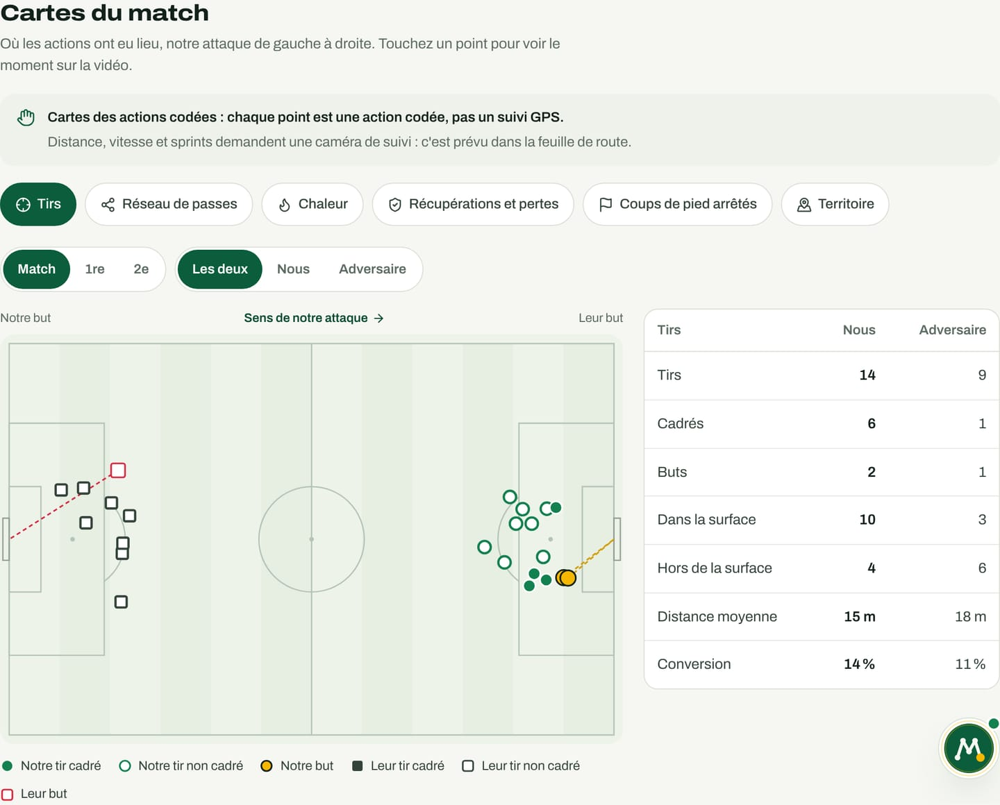
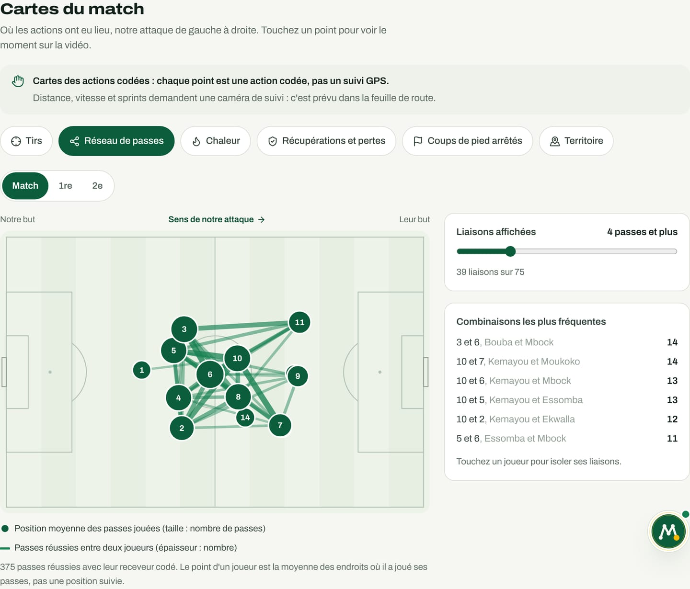
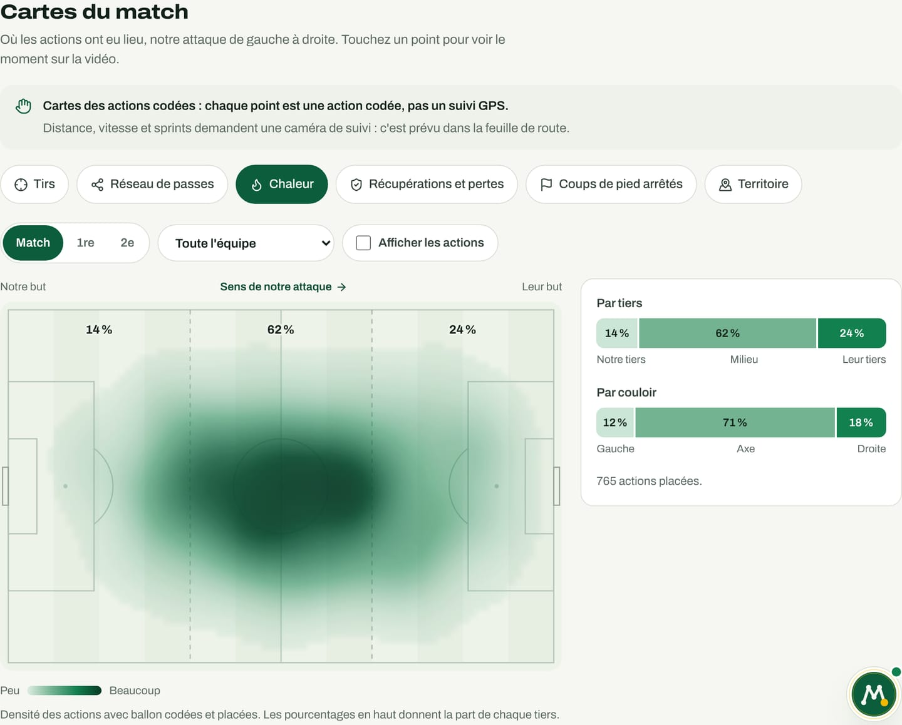
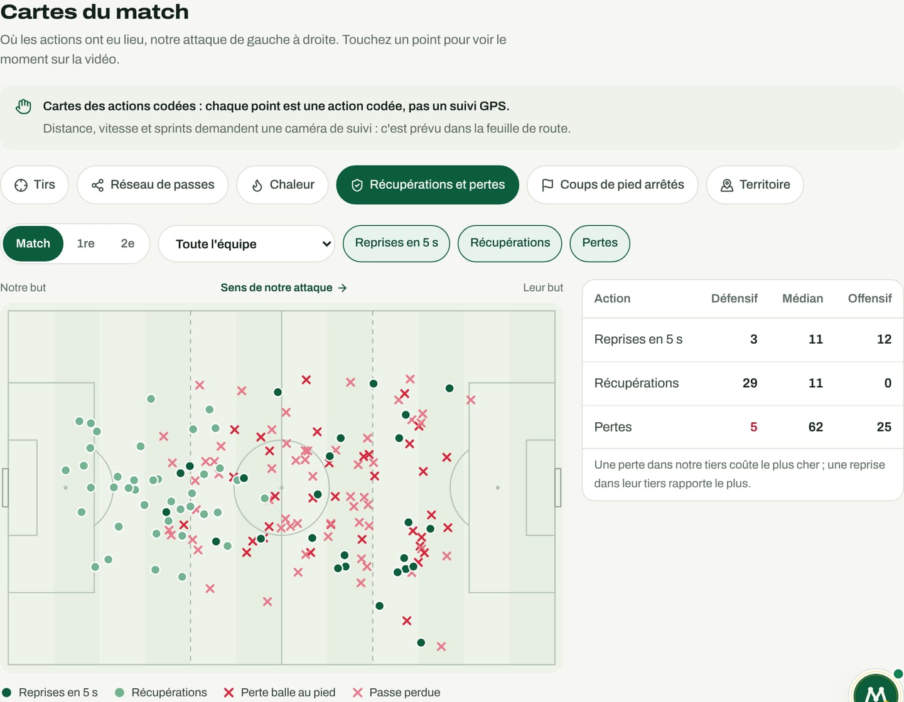
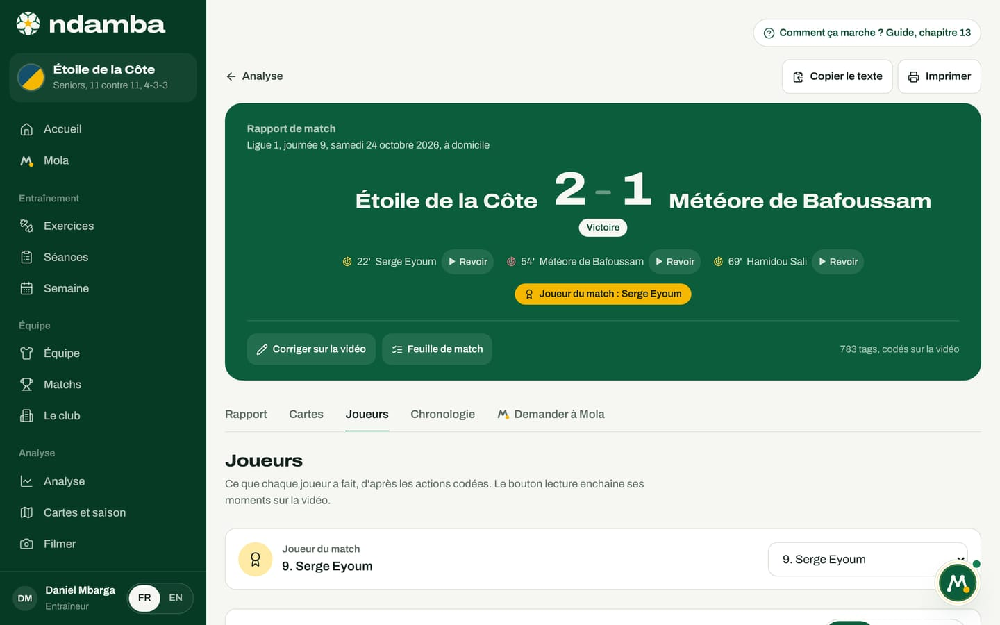
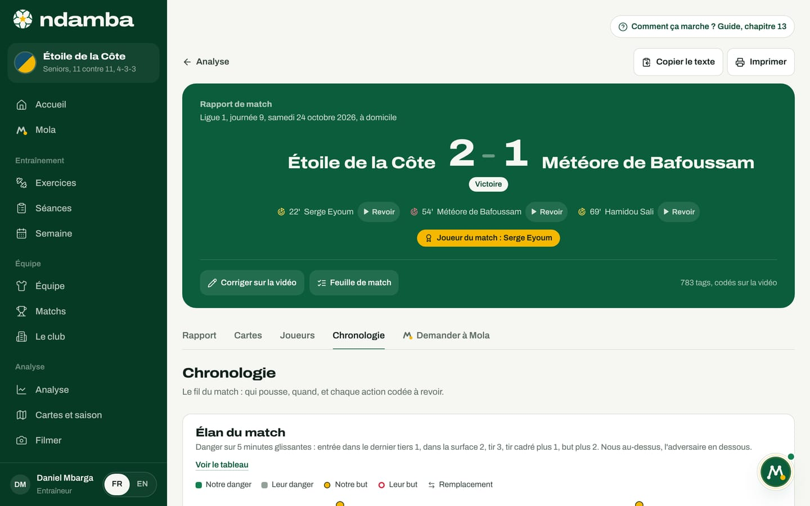
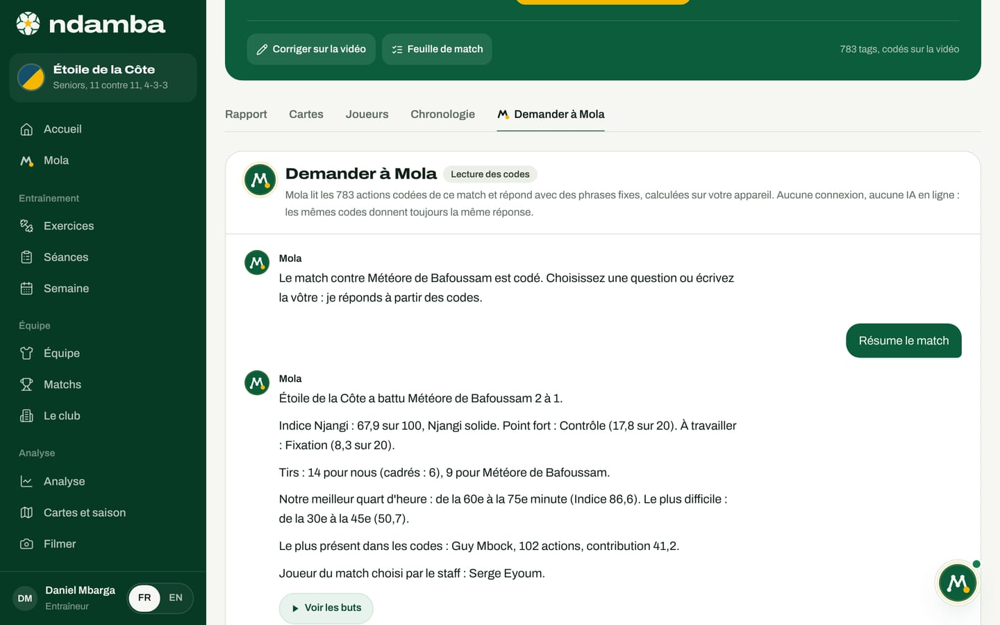
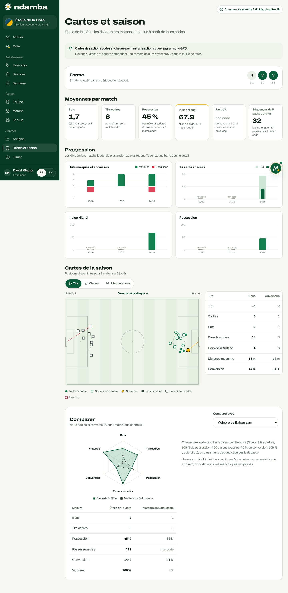
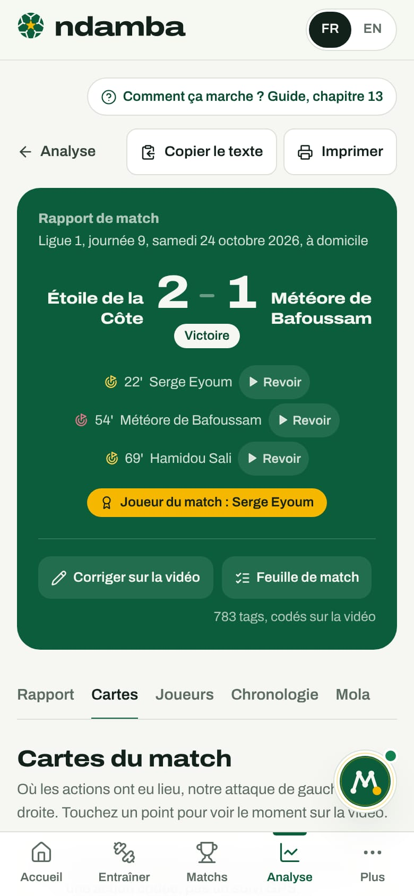

Les cartes du match et la saison
Les onglets du rapport de match (Cartes, Joueurs, Chronologie, Demander à Mola), ce que montre chaque carte et comment ses chiffres sont calculés, puis la page Cartes et saison, qui lit les dix derniers matchs. Avec la règle d’honnêteté : une carte montre des actions codées et placées d’un tap, pas un suivi des joueurs.
13 min de lecture
L’Indice Njangi dit si l’équipe a possédé avec intention. Il ne dit pas où. Or un entraîneur pense en espaces : par quel couloir on entre, où l’on perd le ballon, qui joue avec qui, à quel moment le match a basculé. Les cartes répondent à ces questions avec les mêmes codes que l’Indice, à une condition : que chaque action codée ait aussi sa place sur le terrain. Ce chapitre ouvre les quatre onglets visuels du rapport de match, puis la page Cartes et saison, qui fait la même lecture sur toute la saison.
Une règle d’abord, que l’application affiche en tête de chaque carte : « Cartes des actions codées : chaque point est une action codée, pas un suivi GPS. » Et la suivante : « Distance, vitesse et sprints demandent une caméra de suivi : c’est prévu dans la feuille de route. » Un point sur une carte, c’est une personne qui a touché un code, puis touché l’endroit du terrain où l’action a eu lieu. Rien n’est mesuré automatiquement.
D’où viennent les positions
Les positions se saisissent dans le studio vidéo, en codant (chapitre 29). Activez Placer sur le terrain (touche M) : après chaque code, un mini-terrain s’ouvre avec la question « Passe à 21:40 : où, et qui ? ». Touchez l’endroit de l’action (notre attaque va de gauche à droite), puis le numéro du joueur sous Qui ?, et pour une passe le receveur sous Reçue par. Pour une action de l’adversaire, seul l’endroit est demandé. Tout est facultatif : Passer continue sans placer.
Le match de la démo, Étoile de la Côte contre Météore de Bafoussam (2‑1), a été codé ainsi sur sa vidéo : 783 actions, presque toutes placées et attribuées. C’est pour cela que ses cartes sont pleines. Un match codé en direct, ou codé sans placement, garde son Indice et son rapport, mais ses cartes restent vides : « Les actions de ce match n’ont pas encore de position. Ouvrez la vidéo et codez avec « Placer sur le terrain » : chaque action placée apparaît ici. » Si une partie seulement des actions est placée, un bandeau donne le compte, par exemple dans la démo : « 773 de nos 774 actions codées ont une position sur le terrain : les cartes montrent celles-là. »
Les cinq onglets du rapport
Le rapport de match (chapitre 13) porte désormais cinq onglets sous son en-tête : Rapport, Cartes, Joueurs, Chronologie et Demander à Mola (simplement Mola sur téléphone). Rapport est la page du chapitre 13 : la jauge, les sous-indices, le résumé, les objectifs et les exercices. Les quatre autres se chargent à la demande, pour que le rapport reste léger sur un téléphone. Chaque onglet a son adresse, par exemple /app/analyse/rapport/ma_past ?onglet=cartes : on peut envoyer directement la carte des tirs à un adjoint.
Partout, un point, une ligne ou un bouton Voir ouvre le studio vidéo quelques secondes avant l’action. Quand plusieurs moments sont demandés d’un coup (tous les tirs d’un joueur, par exemple), l’adresse du studio porte la liste de ces moments ( ?list=) et le studio les enchaîne : une bande Moments choisis affiche « Moment 1 / 4 » pour les quatre tirs de Serge Eyoum, avec Moment précédent, Moment suivant et Revoir ce moment. Chaque moment se joue de quatre secondes avant à quatre secondes après l’action.
Cartes
L’onglet Cartes du match dit sa convention : « Où les actions ont eu lieu, notre attaque de gauche à droite. Touchez un point pour voir le moment sur la vidéo. » Six cartes se choisissent en haut : Tirs, Réseau de passes, Chaleur, Récupérations et pertes, Coups de pied arrêtés et Territoire. Un filtre Période (Match, 1re, 2e) les accompagne toutes.
Tirs


Chaque tir est un point : un rond pour nous, un carré pour l’adversaire ; plein s’il est cadré, vide s’il ne l’est pas, plus grand pour un but. Le filtre Équipe (Les deux, Nous, Adversaire) isole un camp. Le tableau compare les deux équipes :
| Tirs | Nous | Adversaire |
|---|---|---|
| Tirs | 14 | 9 |
| Cadrés | 6 | 1 |
| Buts | 2 | 1 |
| Dans la surface | 10 | 3 |
| Hors de la surface | 4 | 6 |
| Distance moyenne | 16 m | 18 m |
| Conversion | 14 % | 11 % |
La distance se mesure du point placé au centre du but visé, sur un terrain de 105 mètres sur 68. La conversion est la part des tirs qui finissent en but. Lecture de la démo : Météore de Bafoussam a tiré six fois de loin et seulement trois fois dans la surface. Le bloc a tenu ; c’est la défense de repos qu’il faut regarder sur leur but.
Réseau de passes


Le réseau dessine chaque joueur à la position moyenne des passes qu’il a jouées (la taille du rond suit son nombre de passes) et relie deux joueurs par un trait dont l’épaisseur suit le nombre de passes réussies entre eux. Il demande des passes codées avec leur passeur et leur receveur : 375 dans la démo. La carte le rappelle : « Le point d’un joueur est la moyenne des endroits où il a joué ses passes, pas une position suivie. »
Le réglage Liaisons affichées fixe un seuil (« 4 passes et plus » montre 39 liaisons sur 75) pour garder une carte lisible. Touchez un joueur pour isoler ses liaisons, avec le nombre de passes qu’il a données et reçues, et Voir toutes ses passes réussies sur la vidéo ; Tout afficher revient à l’ensemble. La liste Combinaisons les plus fréquentes donne les paires : dans la démo, Kemayou et Mbock (15), Bouba et Mbock (14), Kemayou et Moukoko (14). Le pivot Mbock est bien le relais que décrit le plan de jeu.
Chaleur


La carte de chaleur montre la densité des actions avec ballon codées et placées, de Peu à Beaucoup. Le filtre Joueur passe de Toute l’équipe à un seul joueur ; Afficher les actions pose les points eux-mêmes. Dessous, deux répartitions : Par tiers (15 % dans notre tiers, 62 % au milieu, 24 % dans leur tiers pour la démo) et Par couloir (12 % à gauche, 71 % dans l’axe, 17 % à droite), sur 765 actions placées. Un modèle qui veut « fixer d’un côté pour attaquer de l’autre » se lit ici : 71 % dans l’axe, c’est une équipe qui ne va pas encore assez chercher les côtés.
Récupérations et pertes


Cette carte place les Reprises en 5 s, les Récupérations et les Pertes, en distinguant la Perte balle au pied et la Passe perdue. Le filtre Joueur isole un joueur. Le tableau compte chaque action par zone :
| Action | Défensif | Médian | Offensif |
|---|---|---|---|
| Reprises en 5 s | 3 | 11 | 12 |
| Récupérations | 30 | 10 | 0 |
| Pertes | 5 | 63 | 24 |
La règle sous le tableau dit comment le lire : « Une perte dans notre tiers coûte le plus cher ; une reprise dans leur tiers rapporte le plus. » Ici, 12 reprises en 5 secondes dans le tiers adverse : la contre-pression du modèle de jeu fonctionne.
Coups de pied arrêtés
Corners, coups francs, penalties, touches et six mètres se codent à part dans le studio (chapitre 29) et ne comptent jamais dans l’Indice. Codés et placés, ils apparaissent sur cette carte avec un tableau par type. Le match de la démo n’en a pas : la carte affiche « Aucun coup de pied arrêté codé dans ce match. Codez les corners, coups francs, penalties et touches sur la vidéo pour les voir ici. »
Territoire
La carte Territoire coupe le terrain en trois tiers et donne la part de nos actions avec ballon placées dans chacun : 15 % (112 actions), 62 % (472) et 24 % (181) dans la démo. Elle donne aussi deux repères, chacun avec sa méthode écrite sous le chiffre.
La possession. Quand les passes de l’adversaire sont codées, c’est la part des passes : nos passes divisées par les passes des deux équipes. Quand elles ne le sont pas, Ndamba l’estime sur le temps : une séquence à nous commence à une récupération (ou à notre première action) et se termine à une passe perdue, une perte ou un tir ; le temps entre deux séquences est compté pour l’adversaire. La démo affiche 45 %, « Estimée sur la durée de nos séquences codées : les passes adverses ne sont pas codées. »
Le field tilt. C’est notre part des actions jouées dans les tiers offensifs : nos actions placées dans leur tiers, divisées par la somme de nos actions dans leur tiers et des leurs dans le nôtre. Sans positions, Ndamba se rabat sur les codes : nos entrées dans le dernier tiers divisées par celles des deux équipes. Il faut donc coder aussi l’adversaire (touches Q, W et E) : dans la démo, la carte affiche « À coder ».
Joueurs


« Ce que chaque joueur a fait, d’après les actions codées. Le bouton lecture enchaîne ses moments sur la vidéo. »
Le joueur du match. En haut, Joueur du match et la liste Choisir le joueur du match. Le choix revient au staff ; il s’affiche ensuite dans l’en-tête du rapport (« Joueur du match : Serge Eyoum ») et sur la carte du joueur.
Comparer deux joueurs. Choisissez un Premier joueur et un Second joueur, puis Match (les totaux) ou Par 90 minutes (les totaux ramenés à 90 minutes de jeu, plus justes pour un remplaçant). Les deux colonnes alignent passes réussies, progressives, entrées dans le dernier tiers et dans la surface, tirs, buts, récupérations, reprises en 5 s, fixations et renversements, et pertes.
Les cartes. Une carte par joueur qui a joué ou qui a été codé (« 14 joueurs »), rangée par Contribution ou par Numéro. Chaque carte donne le poste, titulaire ou remplaçant, les minutes, puis les lignes Passes réussies (58 sur 64, 91 % pour Guy Mbock), Progressives, Dernier tiers, surface, Tirs (avec cadrés et buts), Récupérations (dont en 5 s) et Pertes, et deux mini-cartes, Chaleur et Passes. Chaque ligne a un bouton lecture : il ouvre le studio avec la liste de ces moments, par exemple les quatre tirs de Serge Eyoum, l’un après l’autre.
La contribution. Le chiffre en tête de carte (43,2 pour Guy Mbock) n’est pas une note. L’application l’écrit : « Contribution : une lecture des codes, pas une note. » Chaque action pèse un poids fixe : passe réussie 0,1 ; progressive 1 ; ligne traversée 1,5 ; entrée dans le dernier tiers 1 ; dans la surface 1,5 ; tir 1 ; tir cadré 1 de plus ; but 4 ; reprise en 5 s 1,5 ; récupération 1 ; fixation ou renversement 1 ; passe perdue moins 0,6 ; perte moins 1. Un pivot qui touche tous les ballons monte haut ; un attaquant qui touche peu mais marque aussi. Pour un jeune, ce chiffre reste au staff.
Chronologie


« Le fil du match : qui pousse, quand, et chaque action codée à revoir. »
L’élan du match. Une courbe minute par minute, notre danger au-dessus de la ligne, celui de l’adversaire en dessous, avec les buts et les remplacements. Le calcul est écrit sous la courbe : sur cinq minutes glissantes, une entrée dans le dernier tiers vaut 1, une entrée dans la surface 2, un tir 3, un tir cadré 1 de plus et un but 2 de plus. Voir le tableau donne les valeurs minute par minute.
L’Indice par quart d’heure. L’Indice Njangi calculé sur les codes de chaque bloc de quinze minutes. Dans la démo : 70,7 de 0 à 15 minutes, 60,3 puis 50,7 jusqu’à la mi-temps, 64,5 à la reprise, 86,6 de la 60e à la 75e minute, 78,1 pour finir. L’équipe a baissé avant la pause et a dominé après l’heure de jeu, au moment où le but de la victoire est arrivé. L’application prévient : sur un bloc court, peu d’actions suffisent à faire bouger le chiffre ; lisez la tendance.
Toutes les actions. La liste du match, par période, filtrée par Type d’action (Moments clés, Danger, Possession, Fixation, Transitions, Coups de pied arrêtés, Tout), par équipe et par joueur. Les Moments clés de la démo font 26 lignes : les tirs, les buts et les remplacements (« 66’ Remplacement : Hamidou Sali entre, Aristide Moukoko sort »). Chaque ligne a son bouton Voir, et Enchaîner les 23 moments joue toute la sélection.
Demander à Mola


Cet onglet n’est pas un assistant en ligne. Sa mention le dit : « Mola lit les 783 actions codées de ce match et répond avec des phrases fixes, calculées sur votre appareil. Aucune connexion, aucune IA en ligne : les mêmes codes donnent toujours la même réponse. »
Les questions suggérées sont Résume le match, Nos tendances, Leur façon de jouer, Notre efficacité devant le but, Où perdons-nous le ballon ?, Qui a le plus pesé ?, Notre pressing et Forces et faiblesses. On peut aussi écrire sa propre question dans Votre question sur ce match ; Mola reconnaît ces sujets et la possession. À Résume le match, la démo répond :
Étoile de la Côte a battu Météore de Bafoussam 2 à 1. Indice Njangi : 67,9 sur 100, Njangi solide. Point fort : Contrôle (17,8 sur 20). À travailler : Fixation (8,3 sur 20). Tirs : 14 pour nous (cadrés : 6), 9 pour Météore de Bafoussam. Notre meilleur quart d’heure : de la 60e à la 75e minute (Indice 86,6).
Les réponses se terminent souvent par un bouton qui ouvre les moments sur la vidéo : Voir les buts, Voir nos tirs, Voir nos pertes avant leurs tirs. Le pied de l’onglet garde la règle : « Une lecture des codes du match, pas un avis : vérifiez sur la vidéo. »
La page Cartes et saison
Dans le menu, groupe Analyse, touchez Cartes et saison (adresse /app/analyse/studio). Le sous-titre fixe le périmètre : « Étoile de la Côte : les dix derniers matchs joués, lus à partir de leurs codes. » Les deux phrases d’honnêteté suivent, comme sur les cartes du match.


Forme. Les derniers résultats en pastilles V, N, D, avec le score et l’adversaire, et le compte : « 3 matchs joués dans la période, dont 1 codé. » Un match non codé n’apporte que son score.
Moyennes par match. Six tuiles, chacune avec sa base de calcul :
| Tuile | Démo | Base |
|---|---|---|
| Buts | 1,7 | « 0,7 encaissés, sur 3 matchs joués » |
| Tirs cadrés | 6 | « pour 14 tirs, sur 1 match codé » |
| Possession | 45 % | estimée sur la durée de nos séquences |
| Indice Njangi | 67,9 | Njangi solide, sur les codes cumulés |
| Field tilt | non codé | demande de coder aussi les actions adverses |
| Séquences de 5 passes et plus | 32 | la plus longue : 17 passes |
L’Indice de la saison se calcule toujours sur les codes additionnés de tous les matchs codés, jamais sur la moyenne des Indices : un match codé en entier pèse plus qu’un match codé à moitié.
Progression. Quatre graphiques en barres, du plus ancien au plus récent : Buts marqués et encaissés, Tirs et tirs cadrés, Indice Njangi et Possession. Un match non codé porte la mention « non codé ». Touchez une barre pour son détail et Ouvrir son rapport.
Cartes de la saison. Les cartes Tirs, Chaleur et Récupérations (avec Ajouter les pertes) sur tous les matchs de la période qui ont des positions : « Positions disponibles pour 1 match sur 3 joués. »
Comparer. Choisissez dans Comparer avec un adversaire déjà rencontré ou une autre équipe du club. Un radar à six axes (Buts, Tirs cadrés, Possession, Passes réussies, Conversion, Victoires) superpose les deux équipes, avec le tableau des valeurs. Chaque axe va de zéro à une valeur de référence (3 buts, 8 tirs cadrés, 100 % de possession, 450 passes réussies, 40 % de conversion, 100 % de victoires), ou plus si l’une des deux équipes la dépasse. Un axe en pointillé n’est pas codé pour l’adversaire. Comparer les seniors aux U19 du même club montre en un regard où la catégorie inférieure doit encore progresser pour monter.
Sans équipe, la page demande Créez d’abord votre équipe ; sans match joué, elle propose Ouvrir les vidéos et Programmer un match.

